Key Metrics
The Problem
I wanted one small project that covers the standard AWS serverless pieces end to end: an HTTP API, functions, a managed database, file uploads, and a static frontend behind a CDN, all declared as code.
A task manager keeps the data model trivial, so the work is in the infrastructure and the access patterns. The target was a stack that one cdk deploy creates and one cdk destroy removes.
Architecture

Approach & Implementation
- Serverless API: an API Gateway REST API with 6 methods, each routed to its own Node.js 18 Lambda for task CRUD against one DynamoDB table (on-demand, point-in-time recovery, a status GSI).
- Frontend: a React app meant to be built to an S3 bucket behind CloudFront.
- CDK infrastructure: one TypeScript CDK stack defines the API, table, two buckets, the distribution, and a shared Lambda IAM role. Uploads use presigned S3 URLs so file bytes never pass through Lambda.
- CI/CD (draft): a CodePipeline stack is drafted alongside the app stack; adding the deploy stage is next.
- Observability: Lambda logs with one-week retention, API Gateway stage logging and metrics, and one alarm on API 4XX errors
Challenges & Solutions
Challenge: Environment drift from manual setup
Hand-built resources diverge between dev and prod, making deployments unpredictable.
Solution: Everything in CDK
One TypeScript CDK stack declares every resource, with four stack outputs (API URL, CloudFront URL, bucket names), so the environment can be created and destroyed from code.
Challenge: Coordinating frontend + backend releases
API changes and static-site deploys can easily ship out of sync.
Planned: single CodePipeline flow
A CodePipeline flow that builds backend and frontend from one commit; the build stage is drafted and the deploy stage comes next.
Outcome
The infrastructure is fully defined in one CDK stack: API Gateway, six Lambda routes, DynamoDB, two S3 buckets and CloudFront, with presigned uploads.
Next steps:
- Swap the table keys (userId partition, taskId sort) for list-by-user queries and clean up the pipeline import so
cdk synthpasses. - Add a Cognito authorizer, CloudFront origin access control and handler plus CDK assertion tests.
- Deploy to a sandbox account, wire the pipeline's deploy stage, and record real outputs.